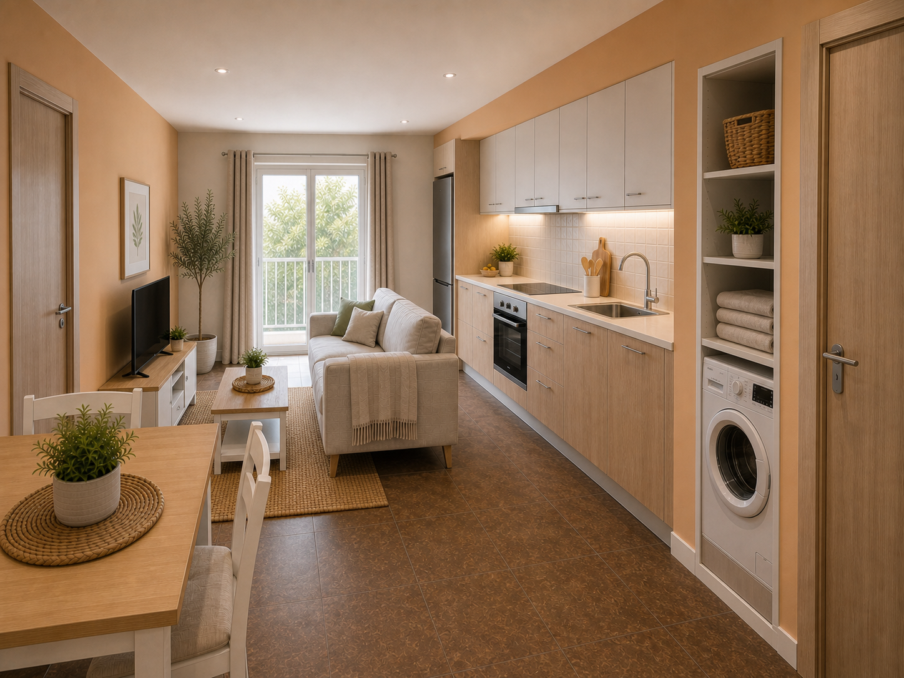
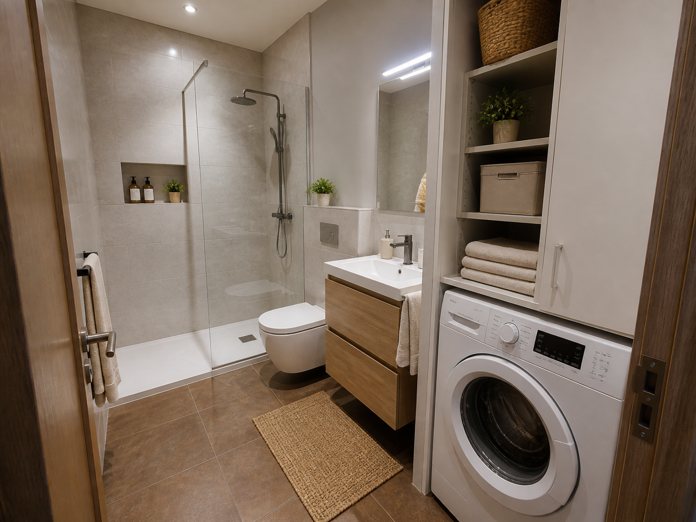
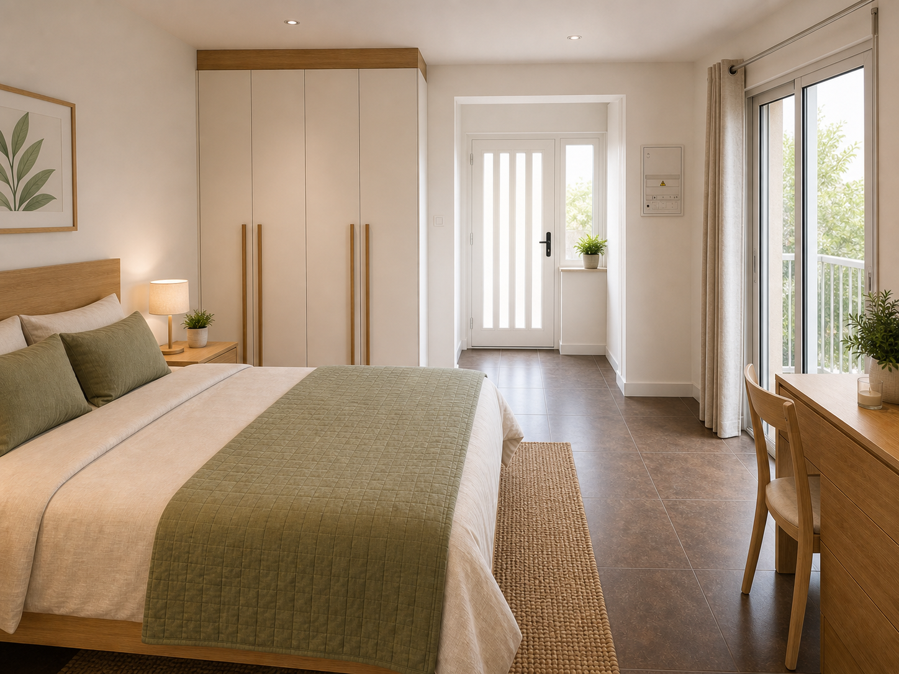
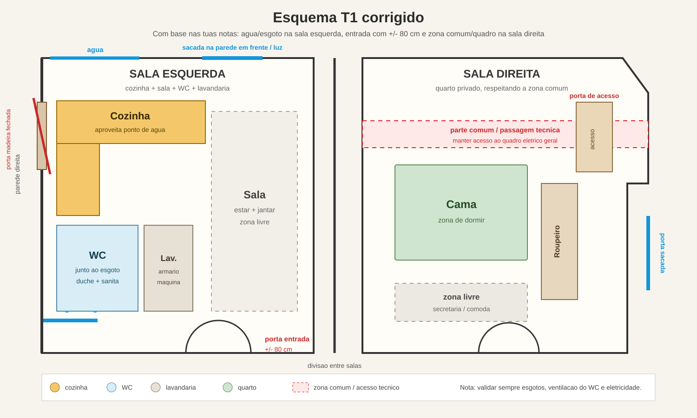

Proposta conceptual para demonstrar o potencial de aproveitamento das duas salas, com cozinha/sala, quarto, casa de banho e lavandaria compacta.
A proposta coloca a cozinha na parede maior da sala esquerda, aproveitando cerca de 6,5 m de desenvolvimento. A casa de banho e lavandaria ficam junto aos pontos de agua/esgoto, e a sala direita fica reservada para quarto, mantendo a zona comum e o acesso tecnico ao quadro eletrico.
O objetivo e mostrar uma solucao realista, compacta e comercialmente apelativa para um T1, sem transformar esta demonstracao num projeto de licenciamento.




Sala esquerda: cozinha, sala, WC e lavandaria em armario.
Sala direita: quarto com roupeiro e zona livre.
Ponto chave: manter as zonas molhadas perto das canalizacoes existentes para reduzir complexidade e custo.